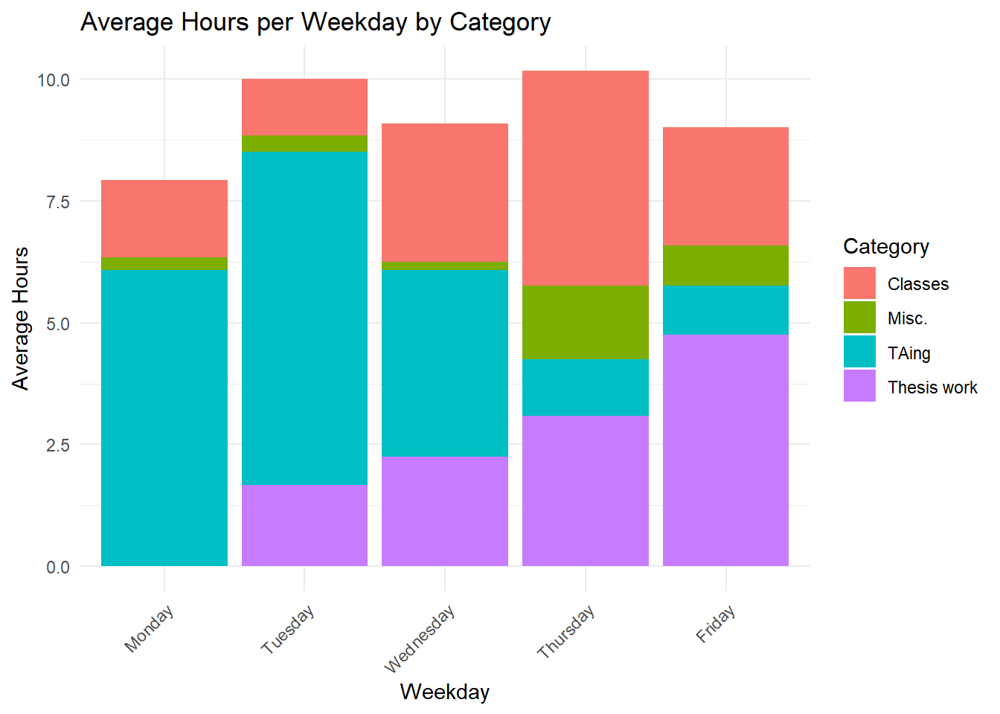

Code
library(googlesheets4)
library(dplyr)
library(tidyr)
library(ggplot2)
hours <- read_sheet("https://docs.google.com/spreadsheets/d/1iGCiQlMPibYPxe2w_sVP0_9L6kkd0rxkxO5Kq71IR6o/edit?gid=0#gid=0")
hours <- hours[!is.na(hours$Totals),]
hours$Weekday <- factor(hours$Weekday, levels = c("Monday", "Tuesday", "Wednesday", "Thursday", "Friday"))
avg_daily <- mean(hours$Totals)
avg_weekly <- hours %>%
group_by(Week) %>%
summarise(weekly_total = sum(Totals)) %>%
summarise(avg_weekly_total = mean(weekly_total)) %>%
pull(avg_weekly_total)
paste0("My daily average is ", round(avg_daily,1), " hours, with a weekly average of ", round(avg_weekly,1), " hours.")[1] "My daily average is 9.2 hours, with a weekly average of 46.2 hours."Code
# Plot weekly hours over time
weekly_totals <- hours %>%
group_by(Week) %>%
summarise(Total_Hours = sum(Totals))
ggplot(weekly_totals, aes(x = Week, y = Total_Hours, group = 1)) +
geom_line() +
geom_point() +
theme_minimal() +
labs(title = "Total Hours per Week Over Time", x = "Week", y = "Total Hours") +
ylim(0,55) +
theme(axis.text.x = element_text(angle = 45, hjust = 1))Code
# Plot hours by weekday for each week
ggplot(hours, aes(x = Weekday, y = Totals, group = Week, color = Week)) +
geom_line() +
geom_point() +
theme_minimal() +
labs(title = "Daily Hours per Week", x = "Weekday", y = "Total Hours") +
theme(axis.text.x = element_text(angle = 45, hjust = 1))Code
# Stacked bars of average hours each weekday by category
hours_long <- hours %>%
select(Weekday, Classes, TAing, `Thesis work`, Misc.) %>%
pivot_longer(cols = -Weekday, names_to = "Category", values_to = "Hours") %>%
group_by(Weekday, Category) %>%
summarise(Avg_Hours = mean(Hours)) %>%
ungroup()
ggplot(hours_long, aes(x = Weekday, y = Avg_Hours, fill = Category)) +
geom_bar(stat = "identity") +
theme_minimal() +
labs(title = "Average Hours per Weekday by Category", x = "Weekday", y = "Average Hours") +
theme(axis.text.x = element_text(angle = 45, hjust = 1))